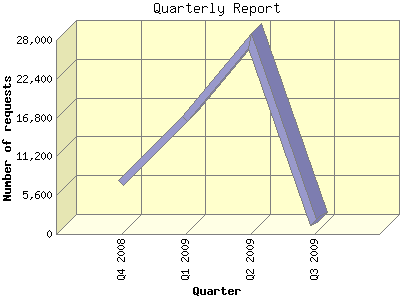

Analog 6.0
Analog 6.0 Report Magic 2.21
Report Magic 2.21The Quarterly Report shows total activity on your site for each quarter of a
year. Remember that each page hit can result in several server requests as the
images for each page are loaded.
Note: Most likely, the first and
last quarters will not represent a complete quarter's worth of data, resulting
in lower hits.

| Quarter | Number of requests | Percentage of the requests | |
|---|---|---|---|
| 1. | Q3 2009 | 1,459 | 2.74% |
| 2. | Q2 2009 | 27,797 | 52.25% |
| 3. | Q1 2009 | 16,571 | 31.15% |
| 4. | Q4 2008 | 7,375 | 13.86% |
Most active quarter Q2 2009 : 27,797 requests handled.
Quarterly average: 13,300 requests handled.
This report was generated on July 5, 2009 11:22.
Report time frame November 4, 2008 08:13 to July 4, 2009 23:06.
| Web statistics report produced by: | |
| Analog 6.0 | Report Magic 2.21 |